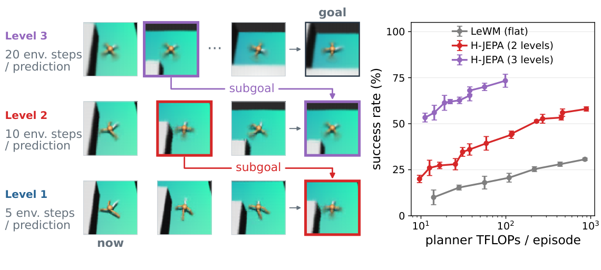
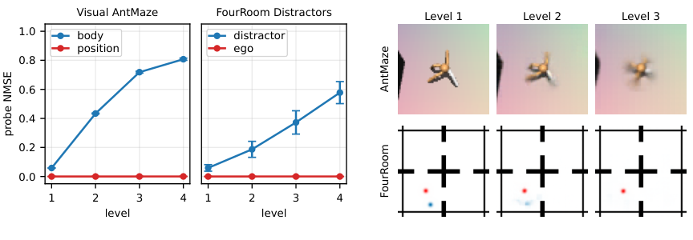
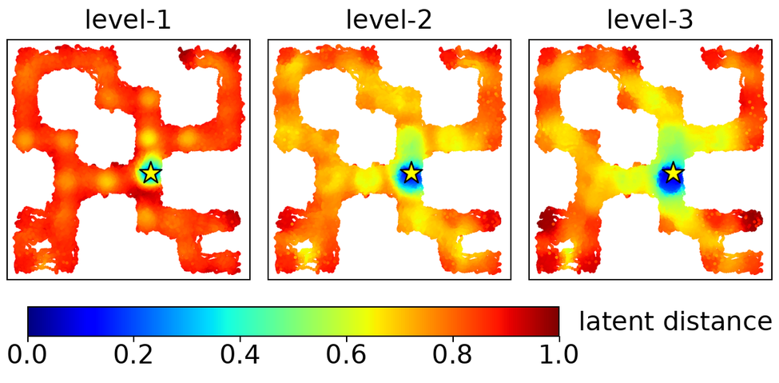
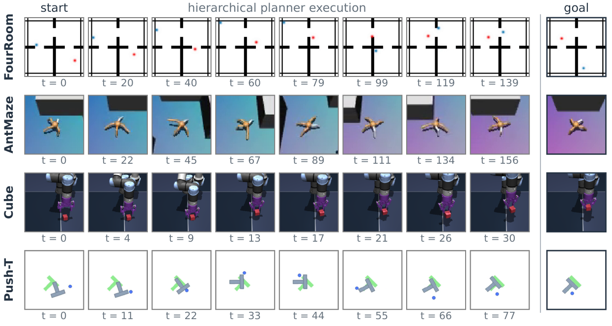
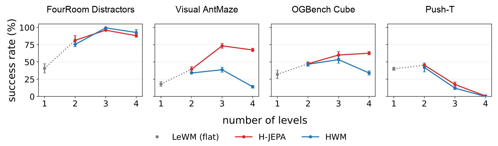

H-JEPA: End-to-End Learning of Hierarchical World Models for Visual Planning
How would you plan a trip to the top of a mountain if you could only think one step ahead? You would probably struggle, and end up with the strategy of going up at every step: take the stairs or the elevator to the top of your building, then sit on the roof and wait for evolution to give you wings. What we actually do is plan in days, then in hours, then in steps. We set realistic milestones and destinations at several levels of abstraction, all the way from our home to the top of the mountain.
A world model that plans far ahead needs the same thing, reasoning at several timescales at once. A Path Towards Autonomous Machine Intelligence proposed a way to do this with a hierarchy of JEPAs: lower levels keep detail and predict a short time ahead, higher levels keep only what stays predictable and look further ahead, and planning flows from the top down. If we sit back and think about it, the brain is organised in a similar way, with slower-changing representations higher up.
H-JEPA (Zhang, Terver, Rabbat, LeCun and Balestriero, October 2026) turns this hierarchy idea into a working model: it trains several distinct levels of abstraction end to end, on top of LeWorldModel, and plans through them from the top down.

Three types of abstraction
To see what H-JEPA adds, the paper puts it next to two other world models. Here is how each of the three would climb our mountain:
- LeWorldModel (LeWM): one level. It plans the climb a few footsteps at a time. Every plan is a long chain of small steps, so mistakes pile up along the way and the number of possible routes explodes. Its single latent space also has to do two jobs: describe each foot placement, and tell how far you still are from the summit.
- HWM: several levels, one shared latent space. It also plans in big jumps. A high-level predictor imagines where a whole day of walking will take you, and those points become camps: subgoals for a low-level predictor that plans the steps to the next camp. But every camp is described in the same detail as a footstep, down to where your feet stand.
- H-JEPA: several levels, each with its own latent space. The first level is a LeWM and plans the footsteps exactly as before. Above it, each level has its own encoder and learns its own, more abstract picture of the climb. At the top, the climb is a short list of landmarks: the hut at the treeline, the ridge, the summit. Each level passes its next landmark down as a subgoal, and the first level works out the footsteps to reach it.
So LeWM → HWM shows what splitting the horizon gives, and HWM → H-JEPA shows what separate latent spaces add.
How it works
Every level of H-JEPA is a small world model of its own, built from the same three modules. The figure shows two levels, with $\ell$ the level number:
![Left, building the hierarchy: at level 1, state encoders E1 turn observations o0 to o3 into latent states z0 to z3, and action encoders A1 turn actions a0 and a1 into action embeddings. At level 2, a state encoder E2 reads only every second level-1 state, z0 and z2, and an action encoder A2 merges the two level-1 action embeddings into one. Right, training each level: a predictor F takes the latent state z_t and action a_t and predicts the next latent state, compared with the true next state; SIGReg regularises the latent states, and the per-level loss is the prediction loss plus lambda times SIGReg.](../../assets/posts/h-jepa/architecture.png)
- State encoder $E^{(\ell)}$ turns what the level sees into a latent state $z^{(\ell)}$. At level 1, it is LeWorldModel's ViT and reads a camera frame $o_t$. At each level above, it is a small two-layer MLP that reads a latent state of the level below, but only every second one. In the figure, level 2 reads $z_0^{(1)}$ and $z_2^{(1)}$ and skips the faded $z_1^{(1)}$ and $z_3^{(1)}$, so it moves through time in steps twice as long as level 1.
- Action encoder $A^{(\ell)}$ turns actions into action embeddings $a^{(\ell)}$. At level 1, it embeds the robot's actual action. At each level above, it merges the two action embeddings of the level below that happen between two of its states into a single macro-action, an idea from HWM. In the figure, $a_0^{(1)}$ and $a_1^{(1)}$ become $a_0^{(2)}$.
- Predictor $F^{(\ell)}$ is the world model of the level. From the latent states so far and their actions, it predicts the next latent state $\hat z_{t+1}^{(\ell)}$.
Level 1 on its own is exactly a LeWorldModel. Level 2 is built on level 1's latent states, level 3 on level 2's, and so on, so each level's predictor looks twice as far ahead as the one below it.
Each level is trained with the same two-term loss as LeWorldModel:
Here $\ell$ is the level, $Z^{(\ell)}$ its latents and $\lambda_\ell$ the weight of its regulariser. The first term asks the level's predictor to land on its next latent; the second, SIGReg, keeps the level's latents close to an isotropic Gaussian, so none of them can collapse. The total loss is simply the sum of these per-level losses. All levels are trained together, end to end: the losses of the upper levels also shape the encoders below them. For visually diverse data, such as real robot videos, an inverse-dynamics term is added, which predicts the action taken between two consecutive latents.
Planning runs from the top down. The current observation and the goal image are encoded at every level $\ell$, giving the current latent $z_0^{(\ell)}$ and the goal latent $g^{(\ell)}$. The top level $L$ searches for macro-actions whose final predicted latent $\hat z^{(L)}$ gets closest to $g^{(L)}$, and its first predicted latent $\hat z_1^{(L)}$ becomes the subgoal of the level below.
That subgoal lives in the upper level's latent space, while the level below predicts latents $\hat z^{(\ell)}$ in its own, so the two cannot be compared directly. To measure its progress, the lower level passes its own predictions through the upper level's state encoder $E^{(\ell+1)}$, and computes the distance to the subgoal in the upper space:
Here $\hat z^{(\ell)}$ is the lower level's predicted latent at the moment it should reach the subgoal, $E^{(\ell+1)}$ lifts it into the upper space, and $\hat z_1^{(\ell+1)}$ is the subgoal handed down from the level above. This is where training all levels together pays off: the upper encoders that the lower planners rely on were learned with them. Each level repeats this with the subgoal it receives, down to the first level, which returns real actions.
At every level, the actions are optimised by gradient descent: the distance to the goal or subgoal is backpropagated through the frozen predictor to the actions, while the model's weights stay fixed. The agent executes the first few actions, observes the result and plans again.
What each level keeps, and what it drops
To see what a level has learned, the authors freeze the trained model and fit small probes that try to read physical quantities out of each level's latents, such as the ant's position or the angles of its legs. A low probe error means the quantity is still in the latent; an error near 1 means it is gone.

The upper levels keep some things and drop others. In Visual AntMaze, the ant's position can be read out at every level, but the pose of its legs gets harder to recover the higher you go. It is the same on our mountain: a plan for the day cares about where you will camp tonight, not about where you put each foot. In FourRoom, the agent's own position stays, while the distractor that moves around on its own fades away, just as the day plan does not care about the wooden stick lying on the path that you will have to step over. That is left to the footsteps. The authors also decoded each level's latents back into images, only for visualization: at higher levels the ant's legs become less distinct and the distractor fades, while the agent stays visible.
The upper levels also give the planner a better sense of direction. To plan, a level measures how far it is from the goal as the Euclidean (L2) distance between latents. The figure below maps this distance over the whole of Visual AntMaze, for the three levels of one trained model. Every dot is a position of the ant, coloured by how far its latent is from the latent of the starred position.

At level 1, almost the whole maze is the same red: apart from the area right around the star, every position looks equally far away, so a planner gets no hint of which way to go until it is already close. At levels 2 and 3, the colour changes gradually along the corridors, from blue near the star through yellow to red at the far ends. Moving towards the star through the maze steadily lowers the distance, which is a cost a planner can follow from far away. This is how the upper levels can lead the levels below towards a distant goal.
These two figures illustrate well why we may need H-JEPA over LeWM, but I would have liked to see the same analysis for HWM. The paper compares all three models throughout, yet here only H-JEPA is shown. Both analyses look cheap to repeat: the probes and the distance maps only need a trained model, frozen. HWM also plans with several levels, so at first I expected it to look much like H-JEPA. The appendix has one related number: how steadily the distance to the goal drops along expert trajectories (Table 10). There, HWM scores lower than H-JEPA in three of the four environments, for example 0.52 against 0.68 on Visual AntMaze, which suggests that its shared latent space gives a less useful distance. Probes and maps for HWM next to these would make the difference much easier to see.
Results
All three models are tested in four simulated environments: two navigation tasks, FourRoom, where a distractor moves around independently of the agent, and Visual AntMaze, where a four-legged ant crosses a maze; and two manipulation tasks, Push-T and OGBench Cube. In every task the model gets the current image and a goal image, and has to plan its way there within a fixed budget of steps.

The first comparison asks how success grows with planning effort. The paper varies how many action sequences the planner optimises, and plots success against the compute this costs, in TFLOPs per episode:
![Four plots of success rate against planner TFLOPs per episode on a log scale, for LeWM (flat), H-JEPA with 2 levels and H-JEPA with 3 levels. FourRoom: 3 levels reach about 95 percent with little compute, 2 levels about 85, LeWM about 57 at the most compute. Visual AntMaze: 3 levels reach about 73 percent at about 100 TFLOPs, 2 levels about 58 at 1000, LeWM about 30 at 1000. OGBench Cube: 3 levels about 60 percent, 2 levels about 47, LeWM about 32. Push-T: 2 levels about 45 percent, LeWM about 33, 3 levels below 20.](../../assets/posts/h-jepa/compute-sweep.png)
In FourRoom, AntMaze and Cube, each added level moves the curve up and to the left: more success for less compute. On Visual AntMaze, the longest-horizon task, three-level H-JEPA reaches 73% at about 100 TFLOPs per episode, while flat LeWM stays near 30% even with ten times more compute, about 1,000 TFLOPs. Push-T is the exception: two levels match or beat LeWM at every budget, but three levels do poorly. One possible explanation, given by the authors, is that Push-T episodes are too short to train a three-level model well.
The second comparison brings in HWM and varies the number of levels, on a separate set of 50 tasks per environment, with the planner tuned under a budget of 100 TFLOPs. Here HWM uses exactly the same code, data and training as H-JEPA, except that every level above the first keeps level 1's latent space:

- Both hierarchies beat flat LeWM in FourRoom, AntMaze and Cube, so splitting the horizon helps on its own. With three levels, H-JEPA takes Visual AntMaze from 18.0% to 73.3%, FourRoom from 40.7% to 96.0% and OGBench Cube from 32.0% to 60.0%. On Push-T, two levels do a little better than LeWM (45.3% against 40.0%), and more levels fall below it.
- Separate latent spaces add most on Visual AntMaze, where three-level H-JEPA reaches nearly twice HWM's success (73% against about 38%). They add a little on OGBench Cube, and on FourRoom and Push-T the two hierarchies are about the same.
The simulated environments always look the same: one camera, one scene, one light. To see whether H-JEPA still works when the world looks different every time, the authors also train it on DROID, a large set of real robot videos recorded in many kitchens, offices and living rooms. Panel (a) below shows the difference: three OGBench Cube episodes look almost identical, while in DROID the room, the lighting, the camera and the objects change from one video to the next.
![(a) Top: three OGBench Cube frames with the same fixed camera, scene and lighting. Bottom: three DROID frames from a living room, a kitchen and an office. (b) Bar chart of Fréchet fidelity on DROID: flat LeWM without the inverse-dynamics loss at about 0 percent, labelled slow-feature collapse; with it, 34 percent; HWM with two levels, 35 percent; H-JEPA with two levels, 40 percent. (c) Fréchet fidelity against planner TFLOPs per episode: H-JEPA highest at around 40 percent with little compute, then HWM and LeWM with the loss; JEPA-WM and V-JEPA 2-AC, built on frozen encoders, need about 1,000 to 100,000 TFLOPs and stay lower.](../../assets/posts/h-jepa/droid.png)
This variety creates a trap. Within one video the scene does not change, so it is easy to predict, while the arm only moves in response to the actions. A model trained only to predict its next latent can take a shortcut: remember which scene it is in and ignore the arm. Its predictions are then almost perfect, but it learns nothing about how to act; the paper calls this slow-feature collapse. The fix is an extra inverse-dynamics loss: from two consecutive latents, a small head has to guess the action taken between them, which it can only do if the latents keep track of the arm. At each level, it is added to the loss above:
Here $z_t$ and $z_{t+1}$ are two consecutive latents of a clip of length $T$, $I$ is the inverse-dynamics head that guesses the action between them, $a_t$ is the action actually taken, used as a fixed target (a macro-action at the upper levels), and $d_a$ is the number of action dimensions.
DROID has no simulator, so plans cannot be executed. Instead, each planned arm path is compared with the path the expert actually took. The comparison uses the Fréchet distance $d_F$ between two paths: walk along both from start to end, each at your own pace, and $d_F$ is the shortest leash that keeps you connected the whole way. The score measures how much of the gap to the expert a plan closes, compared with not moving at all:
Here $p$ is the planned path of the robot's hand in 3D, $\tilde p$ the expert's path, and $0$ the path of not moving at all. A fidelity of 0% is as good as standing still, 100% matches the expert, and a negative value is worse than doing nothing.
Panel (b) shows the effect. Without the inverse-dynamics loss, flat LeWM collapses to about 0%. With it, it reaches 34%. A second level adds to that: HWM reaches 35% and H-JEPA 40%, so separate latent spaces help on real scenes too. Panel (c) adds the planning compute: H-JEPA gets its fidelity with less compute than the flat model, while two world models built on frozen pretrained encoders, JEPA-WM and V-JEPA 2-AC, need orders of magnitude more compute for lower fidelity. No physical robot was used; all of these results are offline.
Future directions
- Closed-loop control on a physical robot: the DROID results are offline; next is running the plans on a real robot.
- Learning from video without actions: building hierarchies from action-free video, which is much easier to collect.
- Goals given in words: aligning upper levels with language, so a goal can be described instead of shown as an image.
- Segments of varying length: letting each level learn how far ahead to look, instead of always twice the level below.
Summary
H-JEPA turns the hierarchy from the 2022 blueprint into a working world model: